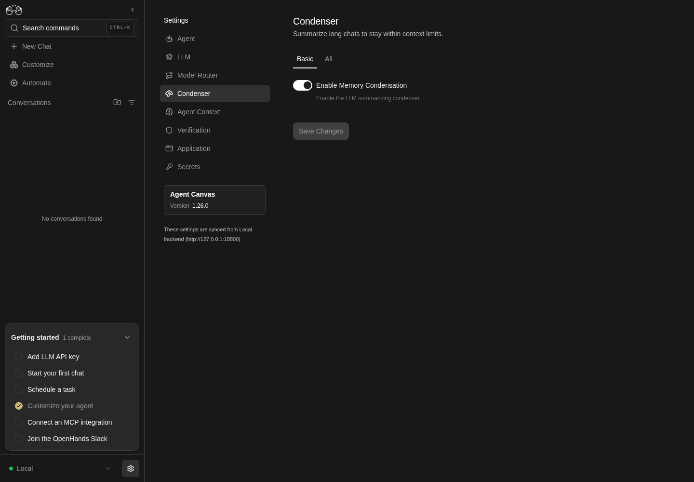
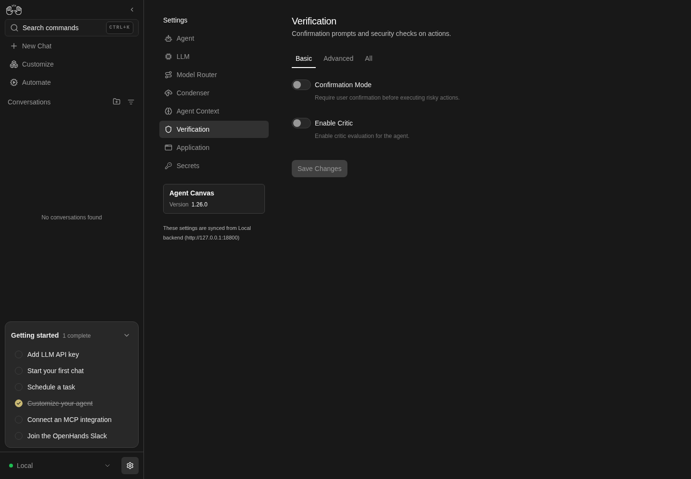

How to get to it
- Sidebar settings gear (
backend-selector-settings-link, lands on/settings/agents), then Condenser, Agent Context or Verification in the settings navigation (sidebar-settings-/settings/condenser,sidebar-settings-/settings/agent-context,sidebar-settings-/settings/verification). - Direct URLs
/settings/condenser,/settings/agent-context,/settings/verification. - Command menu (
Control+korMeta+k, orcommand-menu-triggerin the sidebar): Condenser settings, Agent Context and Verification settings; "memory" finds both Condenser settings and Agent Context. - The effects show up in new conversations only: the confirmation prompt in the chat, and the memory instructions in the conversation's system prompt.
Before you start
Start with the common launch and health checks, then follow this family’s preconditions in order. Recipes share the fixtures and state named below.
Preconditions:
- Baseline state (launched, doctored,
onboard --skipdone). No LLM is needed for the settings pages. F15.confirmation-mode-effectandF15.agent-context-effectneed an active LLM profile (control-openhands llm preset deepseek).F15.schema-unavailableneeds an agent server that serves/api/settingsbut answers 404 for/api/settings/agent-schema(an older release vialaunch --new --sdk-ref <old>); not available in this checkout's pinned stack.- Stored values are the defaults:
control-openhands api GET /api/settingsshowsagent_settings.condenser.enabledtrue,max_size240,condenser_kindllm_summarizing;agent_context.load_memoryfalse;verification.critic_enabledfalse;conversation_settings.confirmation_modefalse.
Behavior inventory
23 stable behavior IDs and their expected behavior
F15.condenser-pageCondenser shows its subtitle, Basic and All tabs (no Advanced), and in Basic only the Enable Memory Condensation switch. Read recipe ↓F15.condenser-all-viewthe All tab lists the eight condenser fields with Title Case labels, plain descriptions and their stored values (Max Size240, Keep First Events2, …). Read recipe ↓F15.condenser-savechanging Max Size and saving shows Saving..., then the saved toast; after a reload the page opens on All with the new value. Read recipe ↓F15.condenser-dependentsturning condensation off hides the six size/reset fields (Condenser Kind stays); turning it back on un-dirties Save. Read recipe ↓F15.condenser-kindCondenser Kind is a dropdown (LLM Summarizer, None, stored asllm_summarizingandno_op); the choice persists, and switching back restores the summarizer defaults. Read recipe ↓F15.save-dirty-stateSave is disabled on load, enabled after an edit, and disabled again when the edit is reverted by hand. Read recipe ↓F15.save-errorsa non-integer Max Size is refused in the browser with a toast; a negative one is refused by the server with a 422 toast; nothing is stored. Read recipe ↓F15.view-scoped-savesaving from a narrower tier keeps the stored values of fields that tier does not show. Read recipe ↓F15.agent-context-pageAgent Context shows a single Persistent Agent Memory switch with its help text and no tab bar. Read recipe ↓F15.agent-context-savetoggling Persistent Agent Memory and saving persists after reload. Read recipe ↓F15.verification-pageVerification shows Basic, Advanced and All tabs; with defaults every tier shows only Confirmation Mode and Enable Critic. Read recipe ↓F15.verification-critic-fieldsConfirmation Mode reveals Security Analyzer (Advanced); Enable Critic reveals Iterative Refinement and Critic API Key (Basic) plus mode, server URL and model (All); Iterative Refinement reveals threshold and max iterations. Read recipe ↓F15.confirmation-mode-saveConfirmation Mode and Security Analyzer (conversation settings) persist after reload, alongside the agent-settings fields on the same page. Read recipe ↓F15.confirmation-mode-effectwith Confirmation Mode on and Security Analyzer None, a new conversation stops before its first command with Do you want to continue with this action? and Cancel/Continue; Continue runs it. Read recipe ↓F15.critic-tuningCritic Mode is a dropdown (Finish and Message,All Actions); the mode, Critic Threshold and Max Refinement Iterations persist after reload, and an out-of-range threshold (1.5) is refused with the 422 toast. Read recipe ↓F15.critic-savecritic text fields persist after reload; the Critic API Key comes back masked; clearing the fields and turning the critic off restores the defaults. Read recipe ↓F15.agent-context-effectwith Persistent Agent Memory on, a new conversation's system prompt carries the.openhands/memory/instructions; with it off, it does not. Read recipe ↓F15.tier-after-saveafter a save the tab bar re-derives the tier from the stored values without a reload: saving the last minor field back to its default moves the page from All to Basic. Read recipe ↓F15.direct-urleach page renders when opened by URL. Read recipe ↓F15.phoneat 390 px the fields stack in one column without horizontal overflow. Read recipe ↓
Readable recipes
Read each script from top to bottom. Code is copied from the map; prose gives the action, expected observation, and conditions. <id>, <run> and similar placeholders stand for values from your own run. Short forms such as browser count continue the same control-openhands invocation; they are kept as documented.
Expected observations describe the recipe’s contract. Captures below selected recipes show representative real states from this snapshot; they do not mark every mapped behavior as passed. Follow cleanup before moving to another family.
No recipes match. Try another word or a behavior ID.
Open Condenser from the sidebar #
- Check
control-openhands browser click 'testid=backend-selector-settings-link' --expect-url '/settings/agents(\?|$)' - Check
control-openhands browser click 'testid=sidebar-settings-/settings/condenser' --expect-url '/settings/condenser(\?|$)' - Check
control-openhands browser text 'testid=settings-page-subtitle'(
Summarize long chats to stay within context limits.) and - Check
control-openhands browser snapshot 'testid=condenser-settings-screen' - ExpectThe snapshot shows tabs
Basic[selected] andAll, the textEnable Memory Condensationandbutton "Save Changes" [disabled]; - Check
control-openhands browser count 'testid=sdk-section-advanced-toggle'is
0. - NoteRead the switch with
- Check
control-openhands browser eval "document.querySelector('[data-testid=\"sdk-settings-condenser.enabled\"]').checked"(
true).

Condenser settings with Basic and All views and Enable Memory Condensation enabled.
Representative documentation capture, not a complete run of this recipe or family. Captured on an isolated local backend at desktop viewport using the current main checkout.
How this screenshot was taken
canvas: 1.26.0 · agent server: 1.53.0 · sdk: 1.53.0 · automation: 1.19.0
OH_VERIFY_RUN="$OH_VERIFY_RUN" control-openhands browser goto /settings/condenser
OH_VERIFY_RUN="$OH_VERIFY_RUN" control-openhands browser wait testid=condenser-settings-screen
OH_VERIFY_RUN="$OH_VERIFY_RUN" control-openhands browser snapshot testid=condenser-settings-screen
OH_VERIFY_RUN="$OH_VERIFY_RUN" control-openhands browser screenshot --feature F15.condenser-page --name condenserAll tier #
- Do
control-openhands browser click 'testid=sdk-section-all-toggle' - Check
control-openhands browser count 'testid=condenser-settings-screen >> input'(
8) and - Check
control-openhands browser value 'testid=sdk-settings-condenser.max_size'(
240). - Check
control-openhands browser snapshot 'testid=condenser-settings-screen' - Notelabels the fields
Enable Memory Condensation,Max Size,Condenser Kind(combobox valueLLM Summarizer),Max Tokens,Keep First Events,Minimum Progress,Hard Reset RetriesandHard Reset Scaling, each with a plain-language paragraph and all but the switch markedOptional(Condenser Kind:How the condenser shortens long conversations. LLM Summarizer replaces older events with a summary written by the LLM; None keeps the full history.).
Dirty state #
- NoteOn the All tier:
- Check
control-openhands browser enabled 'testid=save-button'is
false; - Do
control-openhands browser fill 'testid=sdk-settings-condenser.max_size' 120 - Notemakes it
true; - Do
control-openhands browser fill 'testid=sdk-settings-condenser.max_size' 240 - Notemakes it
falseagain.
Save and reload #
- NoteFill Max Size with
120, then - Do
control-openhands browser click 'testid=save-button' --observe 'testid=save-button' --observe-ms 3000(observed states
Save Changes→Saving...→Save Changes) and - Check
control-openhands browser toasts(
Settings saved. For old conversations, you will need to stop and restart the conversation to see the changes.). - Check
control-openhands browser enabled 'testid=save-button'is
false. - Do
control-openhands browser reload - Check
control-openhands browser snapshot 'role=tablist'(
All[selected]: the page opens on the tier that shows the overridden field) and - Check
control-openhands browser value 'testid=sdk-settings-condenser.max_size'(
120). - Check
control-openhands api GET /api/settingsshows
max_size120. - NoteKeep it for the next bullet.
Dependent fields #
- NoteOn the All tier run
- Do
control-openhands browser click 'testid=condenser-settings-screen >> text=Enable Memory Condensation' - Notethe switch reads
falseand - Check
control-openhands browser count 'testid=condenser-settings-screen >> input'is
2(the switch and Condenser Kind). - NoteClick the label again: the count is
8andbrowser enabled 'testid=save-button'isfalse.
Basic save keeps hidden fields #
- NoteWith Max Size stored as
120, run - Do
control-openhands browser click 'testid=sdk-section-basic-toggle' - Do
control-openhands browser click 'testid=condenser-settings-screen >> text=Enable Memory Condensation' - Do
control-openhands browser click 'testid=save-button' - Check
control-openhands api GET /api/settings - Notenow shows
enabledfalseandmax_size120. - NoteKnown failure (reproduced 2026-10-06):
max_sizeis240, because the save sends defaults for every field Basic does not show (#18049). - ExpectAfter
browser reloadthe page opens on Basic with the switch off. - NoteRestore: click the label again,
browser click 'testid=save-button',browser reload; the switch readstrueand the API showsenabledtrue(withmax_size240today, from the reset above).
Invalid values #
- NoteOn the All tier run
- Do
control-openhands browser fill 'testid=sdk-settings-condenser.max_size' 1.5 - Do
control-openhands browser click 'testid=save-button' - Check
control-openhands browser toasts(
Expected an integer value, received: 1.5; no request is sent). - NoteThen wait for the toast to close, fill
-5, - Check
control-openhands browser network --clear - Do
control-openhands browser click 'testid=save-button' --observe 'testid=save-button' --observe-ms 2500(
Saving...for about 1.5 s), - Check
control-openhands browser toasts(
HTTP request failed (422 Unprocessable Entity): {"detail":"Settings validation failed"}) and - Check
control-openhands browser network(three
PATCH /api/settings). - ExpectThe API still shows
max_size240;browser reloaddrops the bad draft.
Condenser Kind #
- NoteOn the All tier run
- Do
control-openhands browser click 'testid=sdk-settings-condenser.condenser_kind' - Check
control-openhands browser snapshot 'role=listbox'(options
LLM Summarizer[selected] andNone), - Do
control-openhands browser click 'role=listbox >> role=option[name="None"]' - Do
control-openhands browser click 'testid=save-button' - ExpectAfter
browser reloadthe page opens on All,browser value 'testid=sdk-settings-condenser.condenser_kind'isNone, and - Check
control-openhands api GET /api/settings --pick agent_settings.condenseris just
{"enabled": true, "condenser_kind": "no_op"}(the labels are Canvas copy; the stored values are unchanged). - ExpectThe summarizer fields should hide while None is selected.
- NoteKnown failure (reproduced 2026-10-06): Max Size, Max Tokens, Keep First Events, Minimum Progress, Hard Reset Retries and Hard Reset Scaling stay with their defaults, and
browser fill 'testid=sdk-settings-condenser.max_size' 100then Save givesSettings savedwhile the API still shows onlyenabledandcondenser_kindand a reload shows240again (#18049;browser screenshot --feature F15.condenser-kind --name none-shows-summarizer-fields). - NoteRestore by choosing
LLM Summarizerthe same way and saving: after reload the page opens on Basic and the API shows all eight defaults again (condenser_kindllm_summarizing).
Agent Context #
- Check
control-openhands browser click 'testid=sidebar-settings-/settings/agent-context' --expect-url '/settings/agent-context(\?|$)' - Check
control-openhands browser text 'testid=settings-page-subtitle'(
Let the agent keep notes and recall them in new conversations.), - Check
control-openhands browser count 'role=tablist'(
0) and - Check
control-openhands browser snapshot 'testid=agent-context-settings-screen'(text
Persistent Agent Memory, the paragraph about.openhands/memory/,button "Save Changes" [disabled]).
Persistent memory persists #
- Do
control-openhands browser click 'testid=agent-context-settings-screen >> text=Persistent Agent Memory' - Do
control-openhands browser click 'testid=save-button' - Do
control-openhands browser reload - Do
control-openhands browser eval "document.querySelector('[data-testid=\"sdk-settings-agent_context.load_memory\"]').checked"(
true; APIagent_context.load_memorytrue). - NoteRestore: click the label, save, reload; the value is
false.
Verification #
- Check
control-openhands browser click 'testid=sidebar-settings-/settings/verification' --expect-url '/settings/verification(\?|$)' - Check
control-openhands browser text 'testid=settings-page-subtitle'(
Confirmation prompts and security checks on actions.) and - Check
control-openhands browser snapshot 'testid=verification-settings-screen' - Note: tabs
Basic[selected],Advanced,All; textsConfirmation ModeandEnable Critic. - Check
control-openhands browser count 'testid=verification-settings-screen >> input'is
2on Advanced and on All too.

Verification settings offers Confirmation Mode and Enable Critic switches, with Save Changes disabled.
Representative documentation capture, not a complete run of this recipe or family. Captured on an isolated local backend at desktop viewport using the current main checkout.
How this screenshot was taken
canvas: 1.26.0 · agent server: 1.53.0 · sdk: 1.53.0 · automation: 1.19.0
OH_VERIFY_RUN="$OH_VERIFY_RUN" control-openhands browser goto /settings/verification
OH_VERIFY_RUN="$OH_VERIFY_RUN" control-openhands browser wait testid=verification-settings-screen
OH_VERIFY_RUN="$OH_VERIFY_RUN" control-openhands browser snapshot testid=verification-settings-screen
OH_VERIFY_RUN="$OH_VERIFY_RUN" control-openhands browser screenshot --feature F15.verification-page --name verificationCritic and analyzer fields #
- NoteOn All run
- Do
control-openhands browser click 'testid=verification-settings-screen >> text=Confirmation Mode' - Do
control-openhands browser click 'testid=verification-settings-screen >> text="Enable Critic"' - Do
control-openhands browser click 'testid=verification-settings-screen >> text="Enable Iterative Refinement"' - Check
control-openhands browser testids 'testid=verification-settings-screen' --hidden - Notenow lists
sdk-settings-security_analyzer,sdk-settings-verification.critic_mode,sdk-settings-verification.critic_threshold(0.6),sdk-settings-verification.max_refinement_iterations(3),sdk-settings-verification.critic_server_url,sdk-settings-verification.critic_model_name,sdk-settings-verification.critic_api_keyandhelp-link-verification.critic_api_key. - Check
control-openhands browser attr 'testid=sdk-settings-verification.critic_api_key' typeis
password; - Do
control-openhands browser eval "document.querySelector('[data-testid=\"help-link-verification.critic_api_key\"] a')?.href"is
https://app.all-hands.dev/settings/api-keys. - Do
control-openhands browser screenshot --feature F15.verification-critic-fields --name all-critic-onshows the API key spanning both columns.
- NoteBasic (
sdk-section-basic-toggle) keepsconfirmation_mode,critic_enabled,enable_iterative_refinementandcritic_api_key; Advanced addssecurity_analyzer. - ExpectThe three switches are an unsaved draft that survives tab switches: run
- Do
control-openhands browser reload - Notebefore the next bullet, otherwise its Confirmation Mode click turns the switch off again and the save stores the critic draft.
Confirmation mode persists #
- NoteOn
/settings/verification(Basic) run - Do
control-openhands browser click 'testid=verification-settings-screen >> text=Confirmation Mode' - Do
control-openhands browser click 'testid=save-button' - Do
control-openhands browser reload - Do
control-openhands browser eval "document.querySelector('[data-testid=\"sdk-settings-confirmation_mode\"]').checked"(
true). - Do
control-openhands browser click 'testid=sdk-section-advanced-toggle' - Do
control-openhands browser click 'testid=sdk-settings-security_analyzer' - Check
control-openhands browser snapshot 'role=listbox'(options
LLM[selected],None), - Do
control-openhands browser click 'role=listbox >> role=option[name="None"]' - Do
control-openhands browser click 'testid=save-button' - Do
control-openhands browser reload - Note: the tab bar shows
Advanced[selected] and - Check
control-openhands browser value 'testid=sdk-settings-security_analyzer'is
None. - Check
control-openhands api GET /api/settingsshows
conversation_settings.confirmation_modetrue,security_analyzernone. - NoteKeep both for the next bullet.
Confirmation stops the agent #
- Wait
control-openhands conversation start --prompt "Run this shell command: echo qa-f15-confirm" --wait --until waiting_for_confirmation,finished,idle,error --timeout 180 - Notethe status is
waiting_for_confirmation. - Wait
control-openhands browser wait-text 'Do you want to continue with this action?' --timeout 15000 - Notesucceeds and
- Do
control-openhands browser screenshot --feature F15.confirmation-mode-effect --name awaitingshows Cancel ⇧⌘⌫ and Continue ⌘↩ under the pending command.
- Do
control-openhands browser click 'testid=action-confirm-button' - Wait
control-openhands conversation wait <id> --until finished,idle,error --timeout 120(
<id>from the start output) and - Check
control-openhands conversation events <id> --kinds ObservationEvent - Note: the terminal observation is
qa-f15-confirm. - NoteIf the status is still
waiting_for_confirmationthe agent asked again (see Gotchas): confirm again. - NoteRestore on
/settings/verification(control-openhands browser goto /settings/verification; the browser is on the conversation):browser click 'testid=sdk-section-basic-toggle', click the Confirmation Mode label,browser click 'testid=save-button'; the Basic save also resets Security Analyzer tollm(APIconfirmation_modefalse,security_analyzerllm).
Critic values persist #
- NoteOn the All tier click
testid=verification-settings-screen >> text="Enable Critic", run - Do
control-openhands browser fill 'testid=sdk-settings-verification.critic_model_name' qa-critic-model - Do
control-openhands browser fill 'testid=sdk-settings-verification.critic_api_key' qa-dummy-critic-key - Do
control-openhands browser click 'testid=save-button' - Do
control-openhands browser reload - ExpectThe page opens on
All;browser value 'testid=sdk-settings-verification.critic_model_name'isqa-critic-modelandbrowser value 'testid=sdk-settings-verification.critic_api_key'is**********. - NoteRestore on All: fill both fields with
'', clicktext="Enable Critic"again, save, reload: the page opens on Basic and the API showscritic_enabledfalse,critic_model_nameandcritic_api_keynull.
Critic mode, threshold and iterations #
- NoteOn
/settings/verificationrun - Do
control-openhands browser click 'testid=sdk-section-all-toggle' - Do
control-openhands browser click 'testid=verification-settings-screen >> text="Enable Critic"' - Do
control-openhands browser click 'testid=sdk-settings-verification.critic_mode' - Check
control-openhands browser snapshot 'role=listbox'(options
Finish and Message[selected],All Actions). - Do
control-openhands browser click 'role=listbox >> role=option[name="All Actions"]' - Do
control-openhands browser click 'testid=verification-settings-screen >> text="Enable Iterative Refinement"' - Do
control-openhands browser fill 'testid=sdk-settings-verification.critic_threshold' 0.75 - Do
control-openhands browser fill 'testid=sdk-settings-verification.max_refinement_iterations' 5 - Do
control-openhands browser click 'testid=save-button' - Do
control-openhands browser reload - Note: the page opens on
All,browser valuereadsAll Actions,0.75and5, and - Check
control-openhands api GET /api/settings --pick agent_settings.verificationshows
critic_modeall_actions,critic_threshold0.75,max_refinement_iterations5. - NoteThen
browser fill 'testid=sdk-settings-verification.critic_threshold' 1.5,browser network --clear,browser click 'testid=save-button',browser toasts(HTTP request failed (422 Unprocessable Entity): {"detail":"Settings validation failed"}, threePATCH /api/settingswith 422 inbrowser network); the API still shows0.75. - NoteRestore:
browser reload,browser click 'testid=sdk-section-basic-toggle', clicktext="Enable Iterative Refinement"andtext="Enable Critic"off,browser click 'testid=save-button': the Basic save resets mode, threshold and iterations, and the API shows the verification defaults.
Tier follows the stored values after a save #
- NoteOn
/settings/condenser(control-openhands browser goto /settings/condenser; the previous bullet is on/settings/verification) run - Do
control-openhands browser click 'testid=sdk-section-all-toggle' - Do
control-openhands browser fill 'testid=sdk-settings-condenser.keep_first' 3 - Do
control-openhands browser click 'testid=save-button' - Wait
control-openhands browser wait-text 'Settings saved' --timeout 5000 - Check
control-openhands browser snapshot 'role=tablist'(
All[selected]). - NoteThen
browser fill 'testid=sdk-settings-condenser.keep_first' 2,browser click 'testid=save-button', - Wait
control-openhands browser wait 'testid=sdk-settings-condenser.keep_first' --state detached --timeout 5000(
detached) andbrowser snapshot 'role=tablist':Basic[selected] without any reload; the API showskeep_first2(restored).
Memory reaches the agent #
- Do
control-openhands browser goto /settings/agent-context - Noteturn Persistent Agent Memory on and save as in
F15.agent-context-save, then run - Wait
control-openhands conversation start --prompt "Reply with only: ok" --wait --timeout 180 - Check
control-openhands api GET '/api/conversations/<id>/events/search?limit=1' - ExpectThe first event is the
SystemPromptEvent; its text containsProject memory:followed by`.openhands/memory/` under the workspace root. - ExpectThe same call for a conversation started with memory off (for example the one from
F15.confirmation-mode-effect) has no.openhands/memory. - NoteRestore memory off through the page (
control-openhands browser goto /settings/agent-contextfirst:conversation startleft the browser on the conversation).
Leaving discards edits #
- NoteArrange an unsaved draft:
- Check
control-openhands browser click 'testid=sidebar-settings-/settings/verification' --expect-url '/settings/verification(\?|$)' - Do
control-openhands browser click 'testid=sdk-section-all-toggle' - Notethen click
testid=verification-settings-screen >> text=Confirmation Mode,>> text="Enable Critic"and>> text="Enable Iterative Refinement"(do not save);browser enabled 'testid=save-button'istrue. - Check
control-openhands browser click 'testid=sidebar-settings-/settings/condenser' --expect-url '/settings/condenser(\?|$)' - Do
control-openhands browser dialogs(none),
- Check
control-openhands browser click 'testid=sidebar-settings-/settings/verification' --expect-url '/settings/verification(\?|$)' - Do
control-openhands browser eval "[document.querySelector('[data-testid=\"sdk-settings-confirmation_mode\"]').checked, document.querySelector('[data-testid=\"sdk-settings-verification.critic_enabled\"]').checked]"(
[false, false]) andbrowser enabled 'testid=save-button'(false).
Command menu #
- Do
control-openhands browser goto / - Do
control-openhands browser press Control+k - Do
control-openhands browser type 'testid=command-menu >> role=combobox' Condenser - Check
control-openhands browser snapshot 'testid=command-menu'(option
Condenser settings Tune context condensation behavior. Go[selected]), - Do
control-openhands browser press Enter - Wait
control-openhands browser wait-url '/settings/condenser(\?|$)' - NoteRepeat with
Verification(optionVerification settings Adjust risk and confirmation controls. Go, URL/settings/verification) and withAgent Context(optionAgent Context Let the agent keep notes and recall them in new conversations. Go[selected], URL/settings/agent-context, subtitleLet the agent keep notes and recall them in new conversations.). - Do
control-openhands browser press Control+k - Do
control-openhands browser type 'testid=command-menu >> role=combobox' memory - Check
control-openhands browser snapshot 'testid=command-menu' - Note: two options,
Condenser settings …andAgent Context …(hovering selects an option, so click the one you want rather than pressing Enter); close with - Do
control-openhands browser press Escape(
browser count 'testid=command-menu'is0).
Direct URLs #
- Do
control-openhands browser goto /settings/condenser - Wait
control-openhands browser wait 'testid=condenser-settings-screen' - Notelikewise
/settings/agent-contextwithtestid=agent-context-settings-screenand/settings/verificationwithtestid=verification-settings-screen. - NoteEach wait returns
visible.
Phone #
- Do
control-openhands browser viewport phone - Do
control-openhands browser goto /settings/verification - Do
control-openhands browser click 'testid=sdk-section-all-toggle' - Do
control-openhands browser click 'testid=verification-settings-screen >> text="Enable Critic"'(unsaved),
- Check
control-openhands browser bbox 'testid=verification-settings-screen'(width
348,pageHorizontalOverflowfalse) and - Do
control-openhands browser screenshot --feature F15.phone --name verification-all(one column; the settings nav is replaced by a back chevron).
- NoteDo the same for
/settings/condenserAll. - NoteReturn with
- Do
control-openhands browser viewport desktop - Noteand
browser reloadto drop the draft.
Schema unavailable (F15.schema-unavailable, blocked) #
- Do
control-openhands service stop agent-server - Notedoes not reach this state: after
browser reloadthe whole app is replaced by the Manage backends dialog (Disconnected, 502). - NoteBring the stack back with
- Do
control-openhands restart - ExpectThe state needs a backend whose schema endpoints 404 (see Preconditions); there
browser text 'testid=sdk-schema-unavailable'should start withSDK settings schema unavailable.
Errors sweep #
- Check
control-openhands browser errors --clear - Noteopen the three pages and their All tabs, then
- Check
control-openhands browser errors --app-only - Note: no page errors and no warnings (the condenser fields are translated since #18035).
Gotchas and known limits
- Switches are hidden
<input>s (#17900):browser testidslists them only with--hidden. Toggle by clicking the label text scoped to the page, read.checkedwithbrowser eval. text=Enable Criticis a case-insensitive substring match and hits the help paragraphEnable critic evaluation for the agent.first, so the click does nothing. Quote it:text="Enable Critic"(same fortext="Enable Iterative Refinement").- The conversation-owned fields have no
verification.prefix:sdk-settings-confirmation_mode,sdk-settings-security_analyzer. Critic fields keep it (sdk-settings-verification.critic_enabled). - Saving is tier-scoped: Basic or Advanced saves reset every field the tier hides to its schema default (
F15.view-scoped-save). Make all edits on All when other non-default values must survive. - The page opens on the least detailed tier that shows every stored override (any minor override → All). Do not assume Basic after a reload.
- Condenser Kind None (
no_op) still shows the summarizer fields with defaults, although the stored condenser no longer has them, and edits to them are accepted (Settings saved) but dropped while None is stored. #18049 covers hiding fields that do not apply to the selected kind. - A server-side validation error is retried three times (about 1.5 s of
Saving...) before the toast, and the toast only saysSettings validation failedwithout naming the field (#17932). - Condenser Kind is served by the Agent Server's settings schema as a user field. Since #18035 (closed #17939) Canvas shows its own choice labels and help text instead of the raw
llm_summarizing/no_opvalues and the schema's reStructuredText description. It stays a user field on purpose: software-agent-sdk#5531, which dropped it from the schema, was closed because more condenser kinds may come, so the dropdown (andF15.condenser-kind) is expected behavior and its presentation is Canvas's job. OpenHands/software-agent-sdk#5495 (the schema's developer-facing description) is still open. - Toasts close after a few seconds; read them right after the click, or assert the stored value with
api GET /api/settings. - Under confirmation mode the first confirmed command sometimes returned
The terminal session was reset because the underlying tmux server/session disappeared...while several runs shared one tmux server (OpenHands/OpenHands#17946);launchnow isolates them, so treat a reset as a finding. The agent then asks to run it again; a confirmed command took up to two minutes to produce its observation. Confirm again and wait withconversation wait, not a fixed sleep. - The confirmation buttons have test ids (
action-confirm-button,action-reject-button) but their accessible names areConfirm action/Reject action, not the visibleContinue/Cancel:role=button[name*="Continue"]finds nothing. - Basic-tier saves on Verification reset Security Analyzer to
llm(it is an Advanced field). That is a convenient restore, and a trap if you meant to keepNone. - The memory instructions are only visible through the conversation's first event;
conversation eventstruncates text, so readapi GET /api/conversations/<id>/events/search?limit=1and search the JSON. - A checkout without #18035 shows the condenser minor fields with the schema's English text (
Max tokens,Keep first, raw choice values) and logs 14[i18n] Missing translationwarnings on the All tab. - The dropdowns' clear (×) button has no accessible name and, in this build, clicking it through
role=button >> nth=2left the value unchanged. - After every successful save the selected tab is recomputed from the stored values (
F15.tier-after-save), so a follow-upfillon an All-only field can time out because the page silently moved to Basic. Re-clicksdk-section-all-togglebefore each further edit. - Pressing Enter in a field does not save (no toast, API unchanged, Save stays enabled); only the Save Changes button submits.
- Fields revealed by a parent switch do not exist while the switch is off:
filloncritic_thresholdwith Iterative Refinement off waits for a missing element. - Rejecting a pending action (Cancel), the lock chip above the composer and the ⌘↩ / ⇧⌘⌫ shortcuts belong to
F06.confirmation-modeandF06.confirmation-shortcuts; this family only proves that the settings turn the prompt on. browser count 'role=status'also counts the backend status dot (backend-status-dot); usebrowser toastsfor toast texts.
Source paths: src/routes/condenser-settings.tsx, src/routes/agent-context-settings.tsx, src/routes/verification-settings.tsx, src/components/features/settings/sdk-settings/, src/utils/sdk-settings-schema.ts.